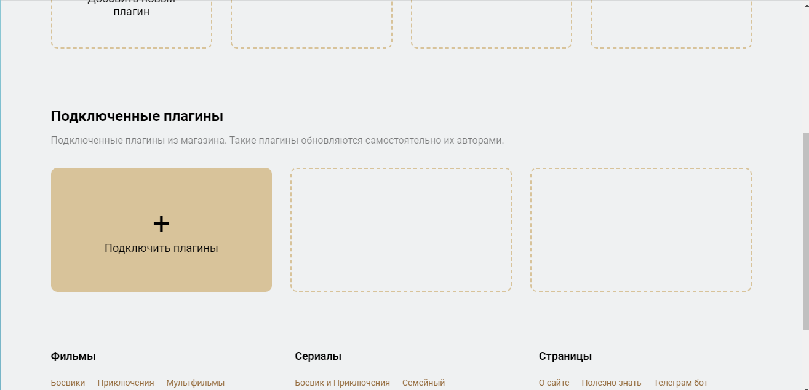

В программе Лампа есть возможность просмотра телеканалов (IPTV)
Самый простой способ это установка плагинов для просмотра телеканалов. Можно из магазина раширений в самой Лампе, либо прописать сторонние. В данный момент в Лампе доступен плагин "Телевидение by Skaz". Утановите плагин и после перезапуска приложения появится доступ к IPTV
